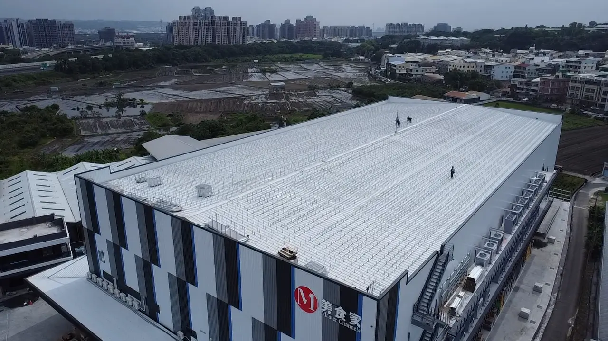
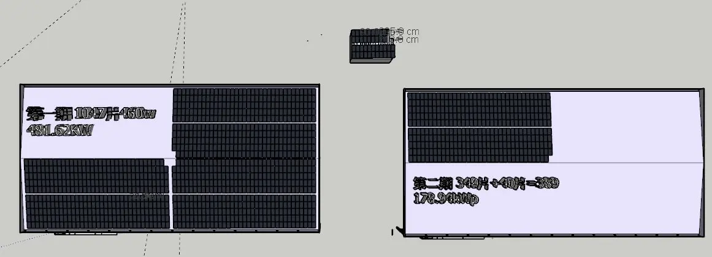
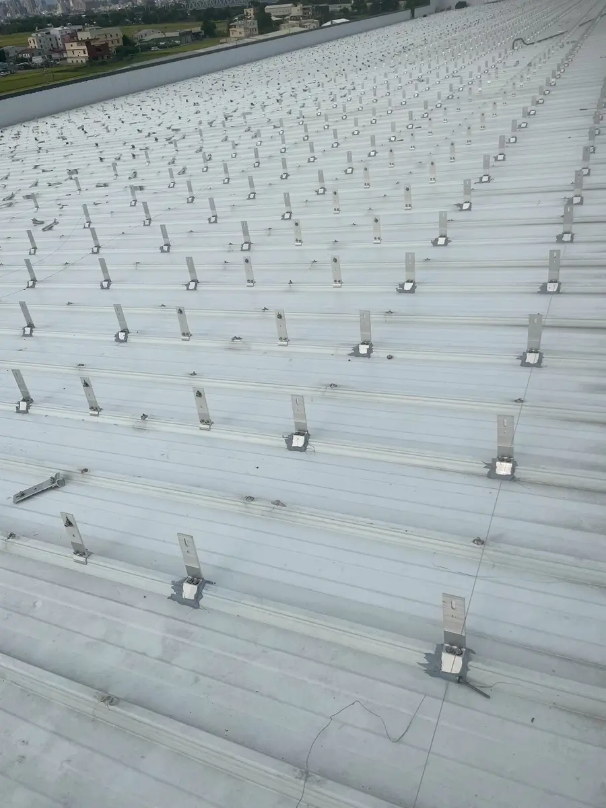
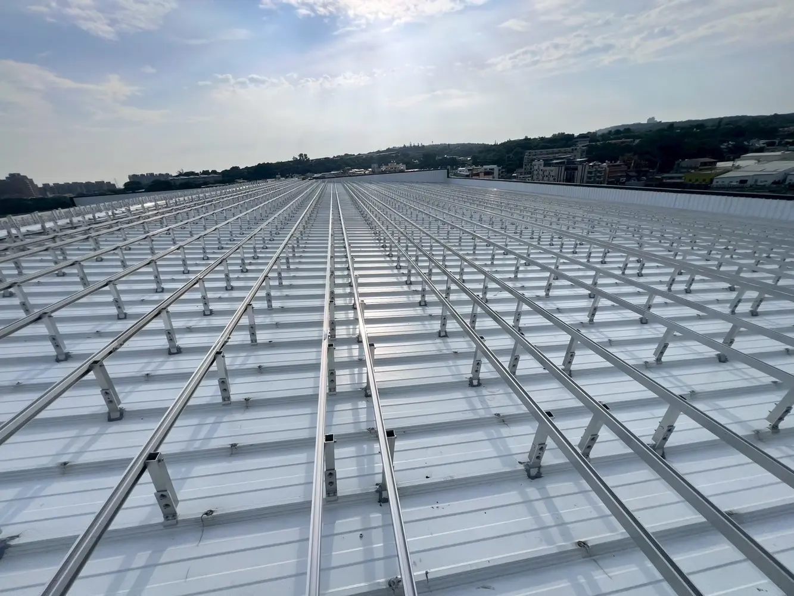
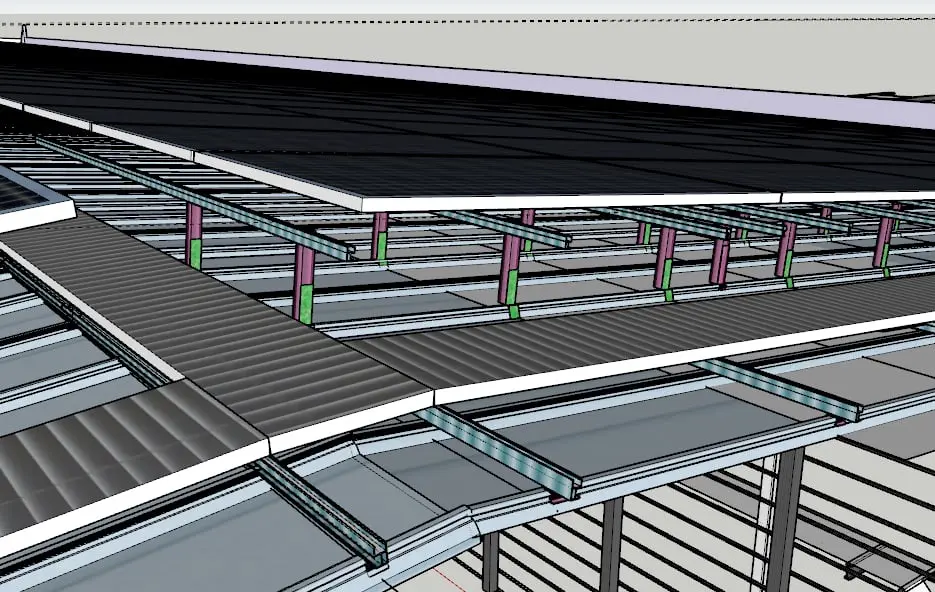
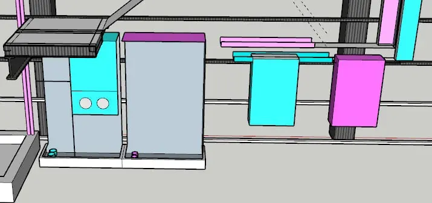

1,047片模組｜主要屋頂區
PROJECTS
實績，不只是一張完工照。
我們呈現每一個案場的規模、承攬範圍與工程細節，讓專業可以被清楚驗證。
DEMONSTRATION SITE · TAICHUNG
彬彬木器／美食家廠區
兩期屋頂太陽能示範場
從模組版鋪與3D施工檢討，到固定座、防水密封、鋁軌、走道、設備與管線配置，建立可追溯的完整工程流程。
總裝置容量660.56 kWp
模組總數1,436 片
模組型號AJB-AH1A-460
建置方式兩期屋頂型

389片模組｜擴充屋頂區
01 / PLANNING
先把分區、設備空間與維修動線畫清楚
版鋪圖將一期與二期容量、模組片數及屋頂分區完整對應，並在施工前確認設備空間與後續維修動線。

02 / CONSTRUCTION
固定、防水與鋁軌精度同步控制
依金屬屋頂條件進行固定座定位與防水密封，再完成大面積鋁軌安裝、調平與後續模組施工準備。


03 / COORDINATION
用3D預先處理走道、支架與機電界面
透過3D模型確認跨越走道、模組收邊、逆變器與配電設備配置，降低現場碰撞與臨時修改。


PROJECT SCOPE
案例工作範圍
- 模組版鋪與容量配置
- 支架及維修走道3D檢討
- 固定座、防水與鋁軌施工
- 逆變器及AC／DC箱配置
- 電纜橋架、管線與設備整合
- 監控、測試、保固與維運規劃
SELECTED EXPERIENCE
代表性工程經驗
以下依公司參與年度與既有簡報資料整理；實際承攬範圍依個別契約。
高雄燁聯 I 棟
2.4 MWp｜太陽能工程
彰茂鹿港廠
499 kWp｜太陽能施工
高雄燁聯 E 棟
2.6 MWp｜太陽能工程
台中社區光儲微電網
太陽能＋儲能｜系統整合
YOUR SITE
下一個案場，從資料盤點開始。
把地址、現場照片或用電資料交給我們，先確認可行性與適合的建置方式。
開始評估